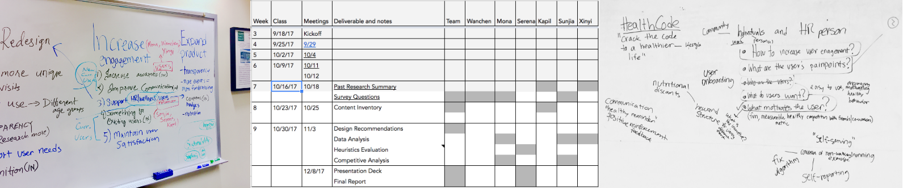
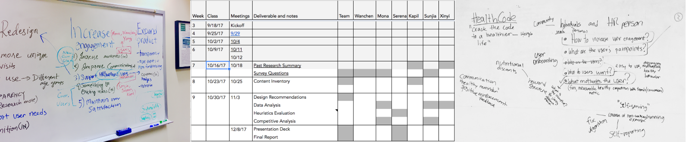
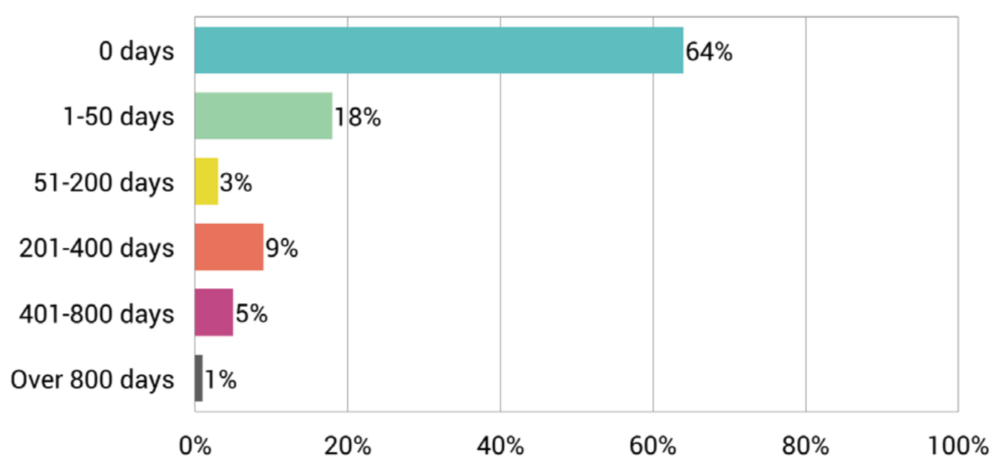
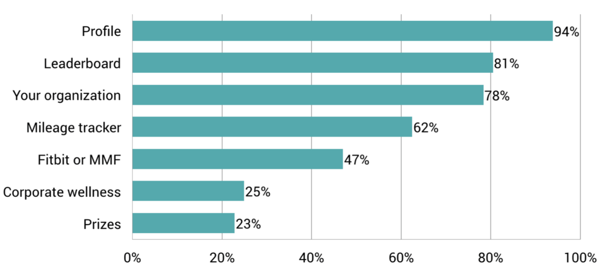
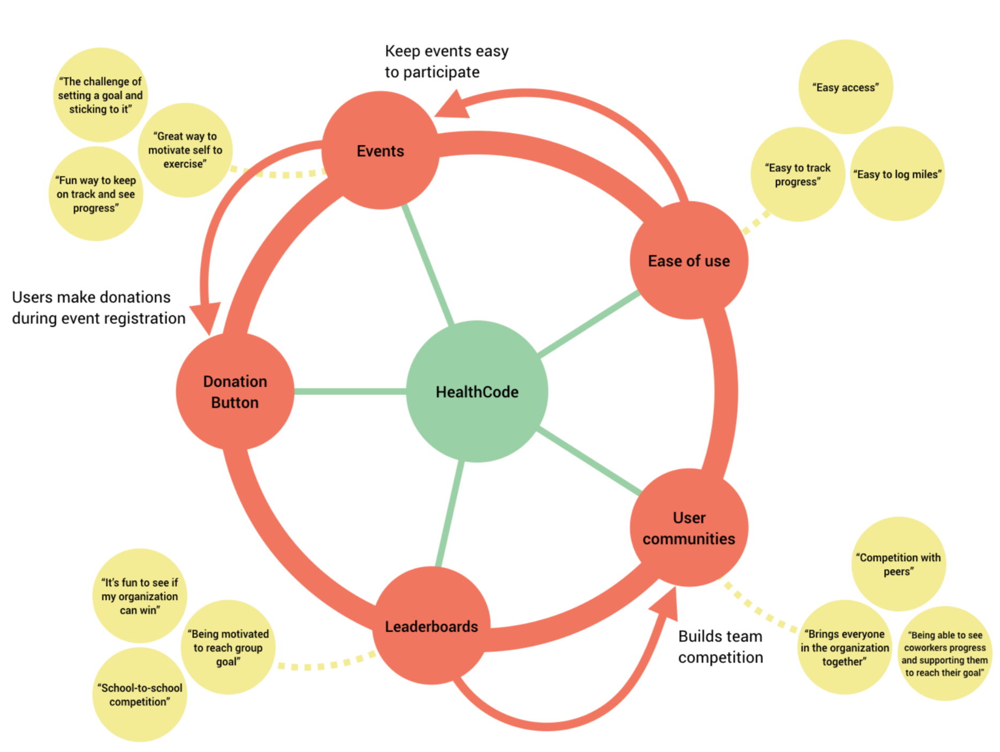
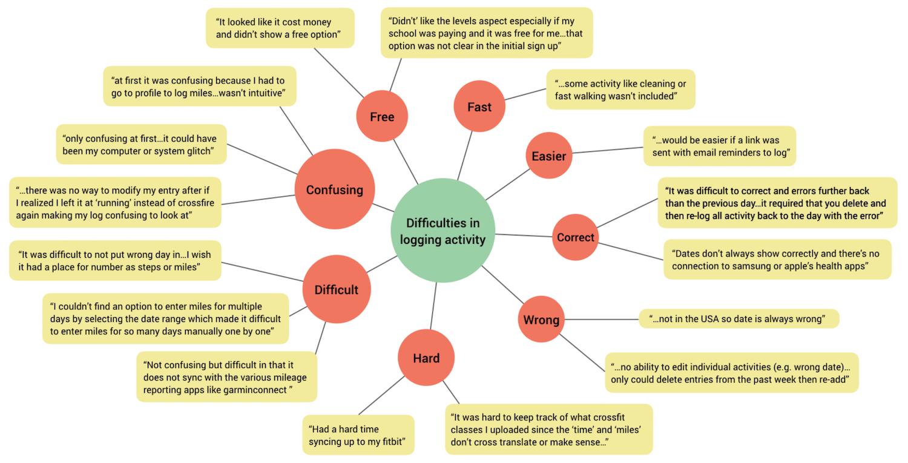

FORMATIVE USER RESEARCH
Healthcode
Healthcode is a non profit organization that promotes physical wellbeing by conducting monthly and quaterly events to encourage active lifestyle. Their target market includes corporate wellness, general public and schools. They approached us with the following needs:
1. Ways to increase engagement of their current users and encourage participation from new users
2. Ways of expanding products/features
3. Recommendations on website redesign.
4. Suggestions to increase revenue stream
Timeline:
3 months
Client:
Healthcode
Course:
Usability
Team:
Mona Mishra(Me) - Lead Researcher
Serena Mistry - Lead Researcher
Shang-Chia Tseng - Lead Researcher
Wanchen Huo - Support
Xinyi Xu - Support
Kapil Raole - Support
Tools:
R Programming - Data Analysis
Voyant - Data Analysis
Mural.com - Affinity Diagraming
Excel - Project Management
Keynote - Presentation Deck
LINK TO FULL REPORT
Process
 

Past Research
We analyzed the data of past events to understand current users and their behavior.
ACTIVE USERS
INSIGHT
64% of accounts are inactive after set-up
18% of accounts are “loyal” users (active over 50 days after set-up)
There is a need to increase engagement to retain existing users and attract new users
POPULAR PAGES
INSIGHT
Profile page and leaderboards are the most common because users log miles and view their individual and group rankings.
Hence, these pages should be main areas of focus during the website redesign.
USER BEHAVIOUR FOR DONATIONS
INSIGHT
Overall, female users donate more than male users
Female users in healthcare and non-profit sectors have the highest donation rates
Organize female-oriented wellness events to attract more female users, like Breast cancer awareness
Expand research to better engage male users
Competitive Analysis
Please click here for detailed report
The following section summarizes our in-depth analysis of HealthCode and its direct and indirect competition in the industry. It includes an evaluation of wellness models of direct competitors for different target users and important features of indirect competitors. We conclude with some recommendations that will be helpful in redesigning HealthCode’s website as well as the corporate wellness model.
KEY TAKEAWAYS
1. Most competitors have a mobile application, in addition to a website, to facilitate daily progress tracking and help their customers to communicate with their peers.
2. Gamification elements such as rewards and customized challenges are used to motivate users to accomplish their goals.
3. Clear design makes it easy for users to understand the purpose and impact of their efforts. Some competitors provide premium features at a small price, such as connecting their customers with experts and personal coaches to offer customized health guidance.
4. Competitors have implemented some features specifically focused towards HR Leaders, such as group announcements and customized messages or notifications to employees.

Of the list of companies we have analyzed, it is apparent that Optimity and Hubbub are top competitors of HealthCode. They touch upon almost all the features listed in the chart, with a main focus on access, connectivity and community initiatives. Another pattern revealed from our analysis is that a number of companies in the wellness sector particularly value access and connectivity.
RECOMMENDATIONS ON IMPORTANT FEATURES
For detailed report please click here
DONATION
Poorly designed donation pages can discourage visitors and even deter them from donating due to lack of trust in the website. We analyzed three organizations including St. Jude Children’s Research Hospital, the American Heart Association and Project C.U.R.E., which are examples of websites that are successful in encouraging visitors to donate.
PROGRESS TRACKING
Tracking user’s progress is critical to a health and fitness business model. Progress tracking allows the user to track their miles and record workouts. This builds a strong connection between the users and the system because it allows them to track their progress over longer periods of time.
LEADERBOARD
Leaderboards can build a heathy competitive environment in a company, between different teams and groups, by motivating employees to work towards a common goal, while receiving health benefits.
INCENTIVES AND REWARDS
Rewards consist of items, gift cards, cash, or perks such as time off or discounts earned through receiving recognition or achieving goals within an incentive program. They can also come in the form of earned points in a gami ed tness app. Simply handing out rewards is not recognition, because it doesn’t provide any value to the employee beyond the dollar amount.
Heuristic Evaluation
We found over 115 issues which focused on consistency, readability, redundancy, clarity and visibility in terms of content, components, interactions and navigation. The issues with redundancy and clarity are key problems across all areas of the sites.
In the report, the issues are identified in screenshots along with a description of the problem, their priority, the primary heuristic broken and recommendations on how to solve the issue. The following images are some screenshots from the report.
The chart shows the key categories of issues across the different areas of the websites.
Qualitative Data Analysis
We examined over 400 open-ended responses to determine key user pain-points and moti20tions. We grouped the data by user type, individual users and HR and health leader users and analyzed them separately using R programming and affinity diagramming.
WHAT'S CURRENTLY WORKING
SENTIMENT ANALYSIS FOR ACTIVITY LOGGING

We created affinity diagram on MURAL
Design Recommendations
From reviewing past research and open-ended responses, performing a competitive analysis and completing a heuristic evaluation of the HealthCode and Million Mile Month website, we determined some key design recommendations
INCREASE ENGAGEMENT
Supported Devices and Platforms
Providing users with access to HealthCode through a smartphone app, in addition to the website, gives them greater flexibility to track their activity.
Rewards and Incentives
Items such as gift cards and coupons, paid time off and bonuses or contributions towards employee health premiums can motivate users to adopt healthy behaviors. Rewarding donors with a medal or a small item will make them feel valued and motivate them to donate again in the future.
Challenges
Give users the ability to form groups and create challenges within their groups.
Fundraising
The conversion of miles to money for fundraising can motivate more users to participate in challenges that support a cause and encourage them to stay active.
Promotional Items
Merchandise such as t-shirts can serve to emotionally connect with participants. In addition to basic promotional items, HR/Health leaders are willing to buy promotional materials like t-shirts, mugs and water bottles with event logos to create buzz among participants.
Recognition
Sponsors should be provided with proper recognition on the website.
Users should easily be able to locate themselves and their group on leaderboards.
EXPAND PRODUCTS
Mile Conversion
The conversion of miles should be limited to certain activities like running, biking, and walking. Other activities, like Yoga, should not be converted to miles.
Progress Tracking
The progress tracking data from the tracker can help motivate users. Progress tracking can be efficiently employed with the help of wearable devices and/or smartphones.
Nutrition
A nutritional tracker encourage users to form healthy habits. Videos from experts can provide education on nutrition and healthier diets.
Targetted Communication
Enables HR leaders to effectively keep everyone up-to-date on their progress or upcoming challenges.
Calendar Sharing
A calendar functionality allows users to share their events with friends and family so they can participate together.
WEBSITE REDESIGN
Clutter
Avoid content that is irrelevant or rarely needed because it distracts from the important content you want the user to see. Eliminate redundancy and ensure all content, components, interactions and navigation are clear.
Consistency
Create a style guide and use it to keep the content, components and overall look consistent across the entire website.
Readability and Visisbility
All content, interactions and navigation should be readable and visible to the user. Consider elements such as text size and color contrast which can help prevent issues.
INCREASE REVENUE STREAM
Donations
Use images and videos that tell the story of HealthCode’s cause to convince users about the impact of their donation. The donation page should also be easy to use to quickly guide users through the process.
Tier-Pricing
Some HR leaders may be willing to pay for premium features including the ability to segment employees into teams, create custom challenges for specific teams and better visual representation of the user and team’s progress.
Customized Reports
Provide HR leaders with paid access to customized reports which include data analysis, activity trends, and action plans, to aid them in efficiently managing their communities.